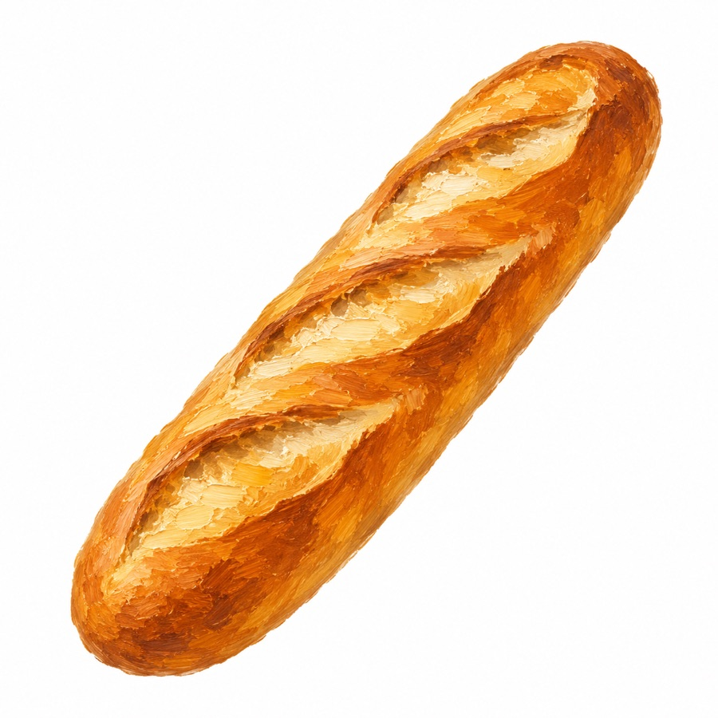

The Grand Prix de la Meilleure Baguette de Paris is the real thing: a City of Paris competition, run every year since 1994, judged by an actual jury. Around 200 bakeries enter, and the baguettes are tasted blind on five criteria — bake, crumb and hole structure (alvéolation), smell, taste, and appearance.

A medal, a €4,000 prize — and for the following year, the winning bakery becomes the official baguette supplier to the Élysée Palace, the French President's official residence. That's a genuinely verified detail, not the kind of thing that usually turns out to be exaggerated once you check it: multiple French and international outlets confirm it, including the competition's own organizers. Results are usually announced in late winter or spring.
Sources: Wikipedia · Ville de Paris
Fournil Didot (14th arrondissement)
The 2026 Grand Prix — the 33rd edition — went to Sithamparappillai Jegatheepan of Fournil Didot, beating 143 other entries on his first attempt at the competition. He arrived in France in 2003, worked in restaurants before moving into baking in 2008, and took over Fournil Didot in 2022 — self-taught on the traditional four-ingredient recipe (flour, water, salt, yeast) rather than trained at a baking school. We haven't tasted the baguette ourselves and won't pretend otherwise; below is what the coverage at the time reported, with sources linked.
Only rank 1 is the jury's official result. Ranks 2–10 come from Paris by Mouth's own independent annual tasting panel of other well-regarded bakeries — useful, but not a City of Paris ranking, so don't mistake them for official runners-up.
Tap a year to see that year's result. Same rule applies: rank 1 is official, the rest is Paris by Mouth's independent tally.